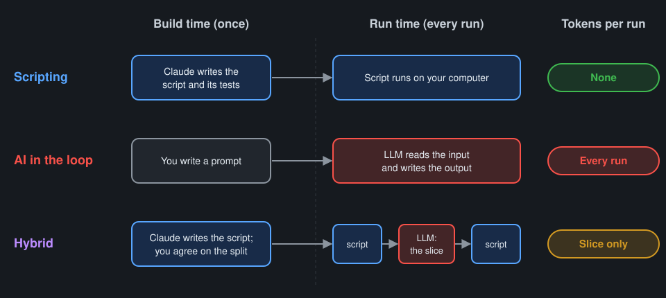
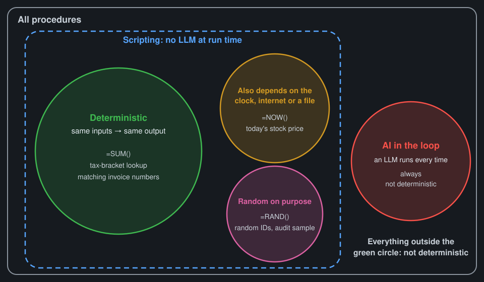

Script or AI? Concepts and examples
Three buckets

| Bucket | What happens at run time | Tokens per run |
|---|---|---|
| 📜 Scripting | Code runs on your computer. AI may have written the code, its tests and its sample data, but no LLM runs now. | None |
| 🤖 AI in the loop | An LLM is called every time the task runs. | Small to large, every run |
| 🔀 Hybrid | Some steps are scripting, some are AI in the loop. | Only for the AI steps |
- AI helping you build a script doesn't make it AI in the loop.
- Writing tests and sample data with AI is part of building, so it's scripting too.
What "deterministic" means
Strict definition: deterministic means the same inputs always give the same output.

| Region | Examples |
|---|---|
| 🟢 Same inputs → same output | =SUM(), a tax-bracket lookup, matching invoice numbers |
| 🟠 Also depends on the clock, the internet or a file | =NOW(), today's stock price, today's exchange rate |
| 🎲 Random on purpose | =RAND(), random IDs, an audit sample |
| 🔴 AI in the loop | Every LLM call: never deterministic |
Randomness in LLMs
- Built into how an LLM picks each word
- Can't be turned off by a Claude user
- Hard to remove completely, even for developers who control every setting
- A tiny change in the input → possibly a different whole answer
- What you type isn't the whole input: the app adds its own instructions, the date, memory, earlier messages
What a script can't do
A script needs you to say in advance where to look and what to do with what it finds.
| Changes from run to run | Script still works? | |
|---|---|---|
| 📊 Monthly Excel export | The values. Column C is always the amount; the steps are always the same. | ✅ Yes |
| 📄 A client's lease | The shape and wording. The rent clause can be anywhere, phrased any way, with an exception in a footnote. | ❌ No: finding it means understanding what the words mean |
- Different values, same shape → scripting
- Different shape or wording, same meaning to find → AI in the loop
Data type doesn't decide the bucket
| Data type | 📜 Scripting example | 🤖 AI-in-the-loop example |
|---|---|---|
| 🔢 Numbers | Totals, reconciliations, depreciation schedules | Reviewing a trial balance for balances that look misclassified for this kind of business (a large "office supplies" balance at a consulting firm) |
| 💬 Language | Find-and-replace, templated engagement letters, a date in a fixed-format file name | Drafting a client explanation of a variance |
| 🖼️ Images | Removing a plain background by color | Reading a crumpled receipt photo |
| 🎙️ Audio | Detecting a sound (a clap, a beep) | A punctuated transcript of a client call |
The input/output lens defines the task, but doesn't decide the bucket
- Use it to describe the task: what goes in, what has to come out, in what format.
- Don't use it to pick the bucket: the same input and output can land in different buckets.
| Input | Output | Variation | Bucket |
|---|---|---|---|
| PDF bank statements | Filled Excel form | Text-based PDFs from one bank | 📜 Scripting |
| PDF bank statements | Filled Excel form | Scans and phone photos from many banks | 🔀 Hybrid |
Clear-cut examples
| Task | Bucket | Why |
|---|---|---|
| Match bank transactions to the ledger by amount, date and reference | 📜 Scripting | Fixed rules; same data in, same matches out |
| Roll forward a depreciation schedule | 📜 Scripting | Pure calculation; Excel already does this |
| Rename and file 200 PDFs by client ID from a system export | 📜 Scripting | The ID is in a fixed place in each file name |
| Combine monthly CSV exports from the same system into one workbook | 📜 Scripting | Same columns every month |
| Convert balances at today's published exchange rate | 📜 Scripting | Depends on the internet, but needs no judgment |
| Pick a random audit sample | 📜 Scripting | Random on purpose; record the seed so the sample can be reproduced |
| Draft a client email explaining a variance | 🤖 AI in the loop | New wording for each client and situation |
| Summarize the key terms of a 40-page lease | 🤖 AI in the loop | The terms can be anywhere, worded any way |
| Answer a client's free-form question | 🤖 AI in the loop | No way to list the questions in advance |
| Turn meeting notes into action items | 🤖 AI in the loop | Deciding what counts as an action means understanding the conversation |
Rules for deciding, and their limits
Rules of thumb:
- Same shape every time, known cases → 📜 Scripting
- Open-ended wording, varied documents, judgment calls → 🤖 AI in the loop
- Mostly the same shape, with some messy cases → 🔀 Hybrid
Why they're hard to apply: we picture the typical input, not the hard ones.
| Task that looks like scripting | ⚠️ Hard input that's easy to overlook | What it does to the design |
|---|---|---|
| Pull totals from bank statement PDFs | 📷 Some statements are scans or phone photos | Text extraction fails on those; add a local model or AI in the loop for those files only |
| Categorize credit card transactions by vendor | 🔤 "Amazon", "AMZN Mktp US", "Amazon.com*2X4" | Rules need a lookup table that grows; unmatched lines need a review path |
| Categorize transactions from free-text memo lines | 🌀 Hundreds of wordings, abbreviations and typos | The script grows to an enormous size and still misses cases; that's the signal to move to hybrid |
| Import a client's Excel export | 🧩 Merged cells, two header rows, a totals row in the middle | The script needs cleanup steps, tested on real exports |
| Fill a form from vendor invoices | 🔁 A vendor changed its invoice layout | Fixed-position rules break silently; add a check that catches missing fields |
| Process a folder of client documents | 🔒 Duplicates, password-protected PDFs | The script needs to detect and list them, not skip them silently |
So: agree on the design with Claude before building anything.
- Ask for the hard inputs, not only the typical ones.
- Ask for the design with the least AI in the loop.
- Ask Claude to compare designs by tokens per run: none / small / large.
- See the prompt card and the starter CLAUDE.md.
Tokens
| 📜 Scripting | 🔀 Hybrid | 🤖 AI in the loop | |
|---|---|---|---|
| Tokens to build | Once | Once | A prompt |
| Tokens per run | None | Small: only the slice that needs judgment | Large: every run |
| 500 invoices | Build once, then free | 500 small calls | 500 full calls |
| A large spreadsheet | The script reads it on your computer for free | The script sends only the rows that need judgment | Pasting it into chat burns tokens just to read it |
- Big files make it worse. Pasting a large spreadsheet into chat burns tokens just to read it.
- Hybrid: send only the slice that needs judgment to the LLM; let the script do the rest.
Hybrid patterns
Agree on the split for each one before building.
| Pattern | 📜 Scripting part | 🤖 AI-in-the-loop part | The seam |
|---|---|---|---|
| AI extracts → script processes | Validate, total, fill the Excel form | Pull fields from messy PDFs into a CSV | Fixed CSV columns; the script rejects rows that fail checks |
| Script filters → AI judges | Run the reconciliation, find the exceptions | Draft the explanation for only the exceptions | The script sends only the exception rows, not the whole file |
| Rules first, AI for leftovers | Categorize by vendor rules (most transactions) | Categorize only the unmatched ones | Unmatched list → AI → review list; good answers become new rules |
| AI first, then promote to script | Later: the script that replaced the AI step | Early: do the task with AI a few times | Once the pattern is stable, ask Claude to turn it into a script |
- Not hybrid: AI writing a script's tests or sample data. That's part of building, so it's scripting.
Zero-token helpers: local machine learning models a script can call
| Need | 💻 Local model | Notes |
|---|---|---|
| Text from scanned documents (OCR) | Tesseract | Struggles with poor scans and handwriting |
| Speech to text | whisper.cpp, Vosk | Runs offline; larger models need a stronger computer |
| Categorize transactions from the firm's own past entries | scikit-learn | Needs enough past examples to learn from |
| Find names, dates and amounts in text | spaCy | Accuracy depends on the type of text |
| Remove an image background | rembg | Downloads a model file on first run |
- Not LLMs. They run on your computer. Zero tokens.
- Narrow: each one does one job.
- Setting them up takes real technical knowledge. Claude can carry most of it, but expect some back-and-forth.
Sort these: discuss and vote
For each task, vote: 📜 Scripting, 🤖 AI in the loop or 🔀 Hybrid. Then ask: what hard inputs could change the answer? Reveal the hints one at a time, then the answer.
1. Email every client a reminder 30 days before their filing deadline
Hints and answer
- Hint: Where does each deadline come from: a list, or someone's judgment?
- Hint: Is the email wording the same for every client?
- Answer: 📜 Scripting. Depends on the clock, but the rule is fixed: deadline minus 30 days, same template.
2. Write a personal year-end note to each client about their year
Hints and answer
- Hint: Which part is pulling each client's figures, and which part is writing?
- Hint: Does each note need new wording?
- Answer: 🔀 Hybrid. The script pulls each client's figures; AI writes the note from only those figures.
3. Flag possible duplicate vendor payments
Hints and answer
- Hint: What if the same invoice was entered twice with the same number and amount?
- Hint: What about "ACME Inc" vs. "Acme, Inc." with amounts a cent apart?
- Answer: 📜 Scripting, maybe 🔀 Hybrid. Exact matches are rules; near-matches may need AI for the leftovers.
4. Turn client voicemails into tasks with the client's name and a due date
Hints and answer
- Hint: Turning speech into text: does that need an LLM, or can a local model do it?
- Hint: Picking a name and a due date out of a rambling message: rules, or understanding?
- Answer: 🔀 Hybrid. A local speech-to-text model (zero tokens), then AI picks out the name and due date from the transcript.
5. Build a monthly KPI summary from the general ledger export
Hints and answer
- Hint: Does the export have the same columns every month?
- Hint: Are the KPI formulas the same every month?
- Answer: 📜 Scripting. Same export, same calculations every month.
6. Pull box amounts from W-2s that clients upload
Hints and answer
- Hint: What if every W-2 is a text PDF from the same payroll provider?
- Hint: What if some are phone photos?
- Answer: 🔀 Hybrid. Text PDFs → script; scans and photos → local OCR or AI; the script checks totals either way.
7. Categorize 3,000 credit card lines from their memo text
Hints and answer
- Hint: How many lines could a vendor lookup table catch?
- Hint: What happens to the rules list as you chase the rest?
- Answer: 🔀 Hybrid. Rules first, AI for leftovers; the rules list grows from the AI's reviewed answers.
8. Decide whether a receipt is a deductible business expense for this client
Hints and answer
- Hint: Can you list in advance every kind of receipt and every kind of business?
- Hint: Who is accountable for the decision?
- Answer: 🤖 AI in the loop, plus a person. Judgment about this client's business; a person signs off.
Testing (if there's time)
- Testability comes from written-down code you can run on controlled inputs.
- Random IDs: test the properties: right length and format, no duplicates in 10,000 runs.
- Today's stock price: test the calculation with a fake price source that always returns $100.
- Due-date reminders: test with the clock frozen ("pretend today is April 10").
- Audit sample: record the random seed in the workpapers so the sample can be reproduced.
Prompt card
Copy and adapt. The starter CLAUDE.md already includes the first one.
Agree on the design first
Before building anything: restate this task as inputs → outputs. List the hard inputs, not only the typical ones. Propose the design with the least AI in the loop. Label each step Scripting, Local model or AI in the loop, and say why. Rate each step's tokens per run: none, small or large. Wait for my OK.
Find another way
How would I do this without AI in the loop? What would I lose?
Find the hard inputs
What could arrive for this task that would break the obvious rules? Think about scans, photos, layout changes, spelling variations, date formats, duplicates and missing files.
Compare designs
Give me two or three designs for this. Rank them by tokens per run (none, small, large), reliability on the hard inputs, and how hard they are to maintain.
Define "done" before building
Before writing the script, write sample inputs, including hard ones, and the output you expect for each. We'll use them to check the script.
Understand the script
Explain this script for someone with no computer science background: what it reads, what it does, what it writes, and what could go wrong.
Turn a chat habit into a script
I keep asking you to do this in chat. Turn it into a script I can run on my own computer, so it costs no tokens per run.
Large files
This file is large. Don't read all of it. Write a script that pulls out only the part you need to see.
Starter CLAUDE.md: Automation beyond the chatbot
Instructions for Claude. Put this file in the folder you work in with Claude Code, or paste it into a Claude Project's instructions.
Words we use
- Scripting: AI may write the script, its tests and its sample data. No LLM runs when the script runs.
- AI in the loop: an LLM is called every time the task runs.
- Hybrid: some steps are scripting, some are AI in the loop.
- Local model: a machine learning model that runs on my computer (OCR, speech-to-text, a classifier). Not an LLM. Zero tokens. Counts as scripting.
- Deterministic: the same inputs always give the same output. AI in the loop is never deterministic.
Before building anything
- Restate the task as inputs → outputs.
- List the hard inputs, not only the typical ones, and ask me which ones actually happen and how often:
- a. blurry or scanned PDFs, photos, handwriting
- b. layout changes, extra header rows, merged cells, totals inside the data
- c. the same name spelled several ways, negative numbers in parentheses
- d. missing, duplicate or password-protected files
- Propose the design with the least AI in the loop.
- Label every step: Scripting, Local model or AI in the loop, and say why.
- Rate each step's tokens per run: none / small / large. Say what makes the cost grow (number of documents, file size).
- If more than one design is reasonable, compare two or three. Rank them by tokens per run, reliability on the hard inputs, and how hard they are to maintain.
- Wait for my OK before building.
When building
- Write Python unless I ask for something else.
- Explain each script in plain language for someone without a computer science background: what it reads, what it does, what it writes, what can go wrong.
- Let the script read large files on my computer. Don't ask me to paste large files into chat.
- Keep fetching (internet, clock, files) separate from calculating, so the calculations can be tested on fixed inputs.
- Between steps, use a fixed hand-off format, such as a CSV with named columns.
- Check AI-in-the-loop output before a script uses it. Send anything that fails the check to a review list for me.
- Before writing the script, agree with me on what "done" looks like: sample inputs, including hard ones, and the expected outputs.
- Give me numbered steps to run it.
- Keep client personal information and passwords or keys out of scripts and out of prompts.
When I ask you to do a task directly in chat
- If it looks repeatable and would cost fewer tokens as a script, say so before doing it.
- If a file is large, offer a script that pulls out only the part that needs your judgment.
Homework
Output: a Python script that runs one step of a real workflow with no AI in the loop.
- Pick one workflow from your firm.
- a. Use one you do often, so the token savings matter.
- b. Use made-up or anonymized sample data, not client data.
- Agree on the design with Claude.
- a. Use the starter CLAUDE.md, or the "Agree on the design first" prompt.
- b. Make sure Claude lists the hard inputs.
- c. Pick the design with the least AI in the loop.
- Define "done."
- a. Have Claude write sample inputs, including hard ones.
- b. Write down the expected output for each.
- Build the scripting part.
- a. Have Claude write the script.
- b. Run it on the sample inputs and compare with the expected outputs.
- c. Ask Claude to explain the script in plain language.
- Bring back:
- a. the design (which steps are scripting, local model, AI in the loop)
- b. the script
- c. one hard input that surprised you
Run of show (60 minutes)
Instructor-only. Not copied to the public participant repo.
Roles
- Presenter: runs a live chat with Claude and fields questions.
- Co-host: follows along as a "student" and keeps time.
- Materials prep: follows along and speaks up if relevant.
Timeline
| Time | Block | What happens | Materials |
|---|---|---|---|
| 0:00–0:10 | Concepts | Three buckets, the deterministic definition and Venn diagram, "data type doesn't decide", tokens. Run 3–4 clear-cut examples. | handout.md (through "Clear-cut examples") |
| 0:10–0:40 | Participant workflows | Go deep on 2–3 participants' workflows. Run the "Agree on the design first" prompt live. Point out hard inputs and the scripting / AI-in-the-loop split. Remaining workflows: point to the handout. If participants bring few workflows, use "Sort these: discuss and vote". | prompt-card.md, CLAUDE.md |
| 0:40–0:55 | Hybrid patterns | Use a participant workflow where one fits; otherwise the examples handout. Agree on the split for each pattern. Mention zero-token helpers. | handout.md (hard inputs, hybrid patterns, zero-token helpers) |
| 0:55–1:00 | Wrap | Starter CLAUDE.md, homework, where to get the files. | CLAUDE.md, homework.md |
If time runs short
- Skip the testing section of handout.md.
- Skip the vote; the answer key is in the handout.
- Cover zero-token helpers in one sentence and point to the handout.
Live-demo checklist
- Show the presenter deciding: asking Claude "do this" vs. "write me a script that does this."
- Ask Claude for the hard inputs out loud, so participants see the habit.
- Ask Claude for relative tokens per run (none / small / large), not exact counts.